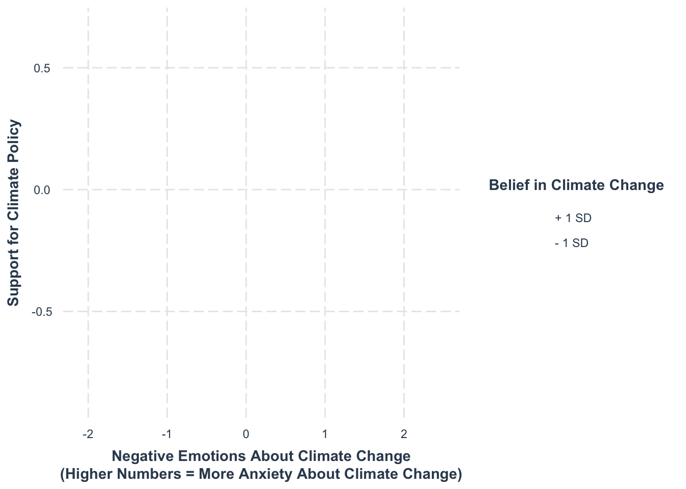
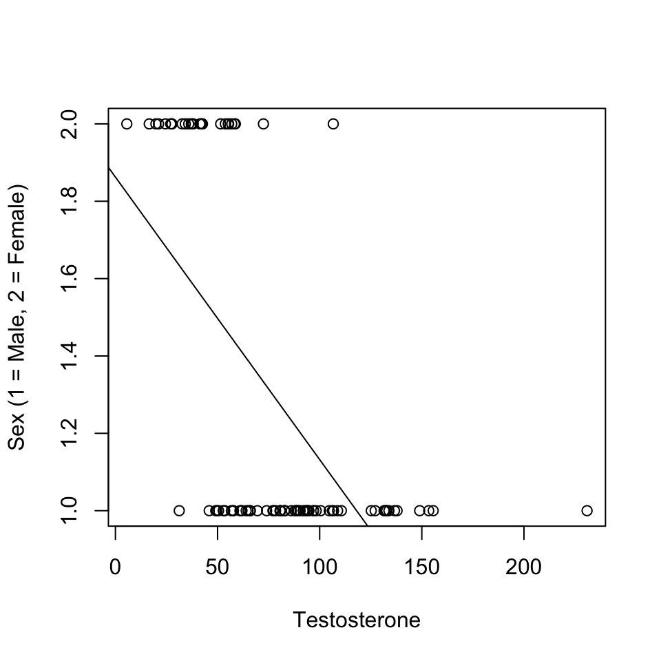
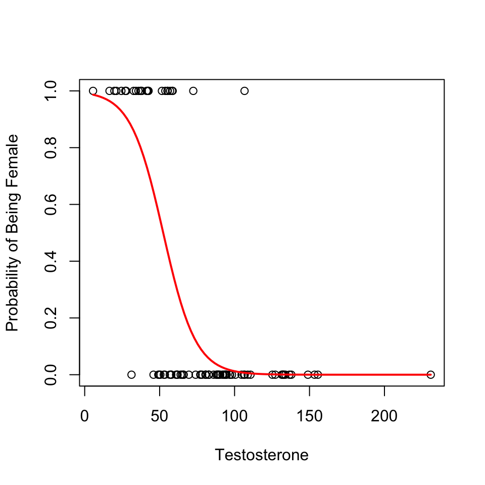
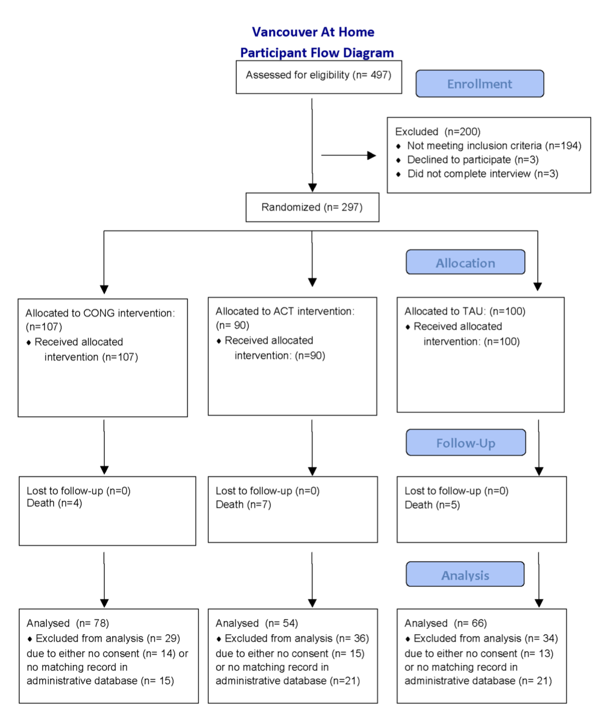
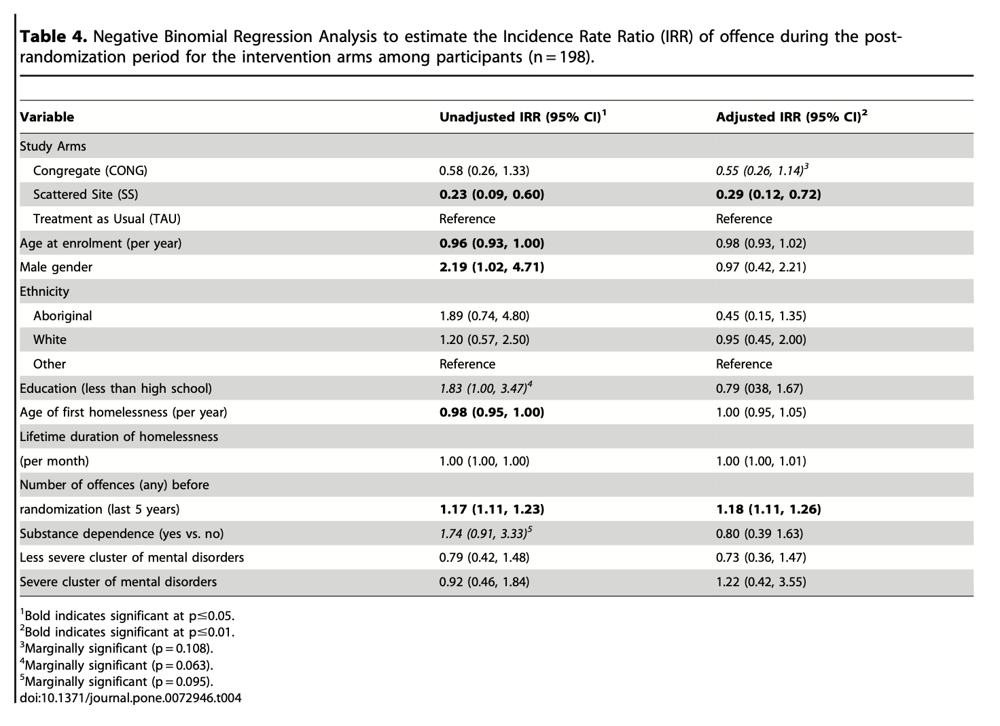

Interaction Effect Review
| Model 1 | |
|---|---|
| Intercept | 0.03 *** |
| Negative Emotions | 0.24 *** |
| Belief in Climate Change | 0.24 *** |
| Negative Emotions x Belief | -0.08 *** |
| N | 67262 |
| R2 | 0.19 |
| *** p < 0.001; ** p < 0.01; * p < 0.05. | |
Logistic Regression
what’s wrong?
h <- read.csv("~/Dropbox/!GRADSTATS/Datasets/Hormone Data/hormone_dataset.csv")
h$sexF <- as.factor(h$sex)
levels(h$sexF) <- c("Male", "Female")
h$sexF <- relevel(h$sexF, ref = "Female")
plot(sex ~ test_mean, data = h, xlab = "Testosterone", ylab = "Sex (1 = Male, 2 = Female)")
mod2 <- lm(sex ~ test_mean, data = h)
abline(mod2)
what’s better?
h$sexR <- h$sex - 1
glmod <- glm(sexR ~ test_mean, data = h, family = "binomial")
plot(sexR ~ test_mean, data = h,
xlab = "Testosterone",
ylab = "Probability of Being Female")
curve(predict(glmod, data.frame(test_mean=x), type = "resp"), add = T, col = "red", lwd = 2)
summary(glmod)
Call:
glm(formula = sexR ~ test_mean, family = "binomial", data = h)
Coefficients:
Estimate Std. Error z value Pr(>|z|)
(Intercept) 4.81974 1.19821 4.022 5.76e-05 ***
test_mean -0.09200 0.02081 -4.420 9.86e-06 ***
---
Signif. codes: 0 '***' 0.001 '**' 0.01 '*' 0.05 '.' 0.1 ' ' 1
(Dispersion parameter for binomial family taken to be 1)
Null deviance: 109.96 on 89 degrees of freedom
Residual deviance: 56.09 on 88 degrees of freedom
(32 observations deleted due to missingness)
AIC: 60.09
Number of Fisher Scoring iterations: 7Real-Life Example
Link to Article : Somers, J. M., Rezansoff, S. N., Moniruzzaman, A., Palepu, A., & Patterson, M. (2013). Housing First reduces re-offending among formerly homeless adults with mental disorders: results of a randomized controlled trial. PloS one, 8(9), e72946.

